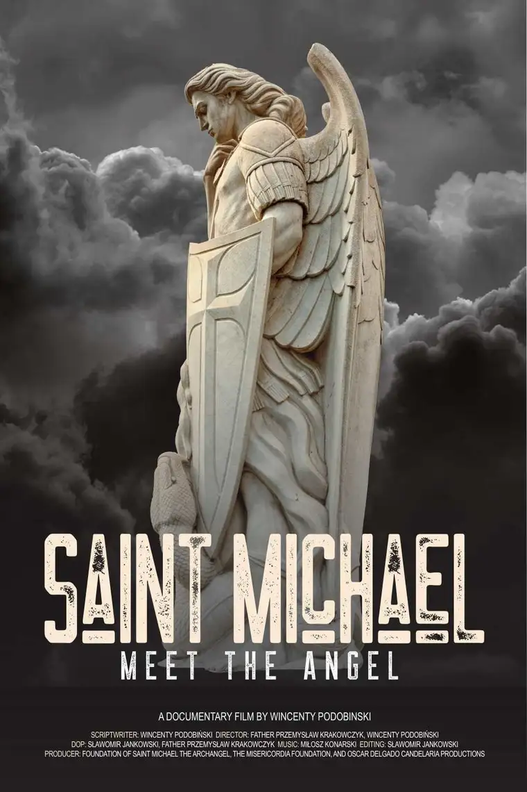
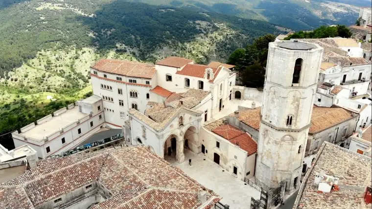
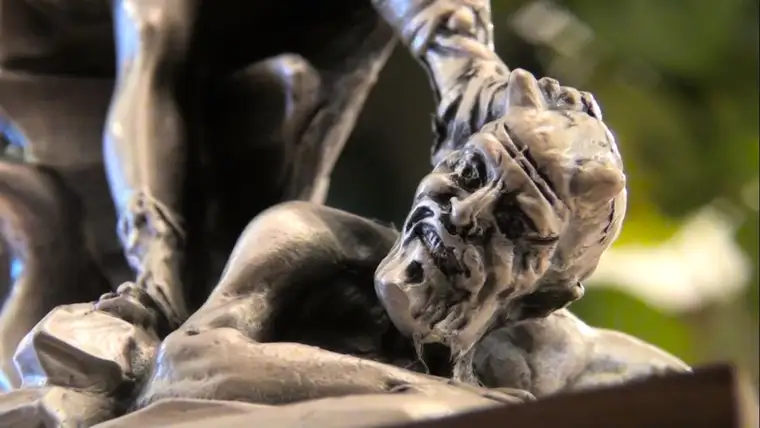
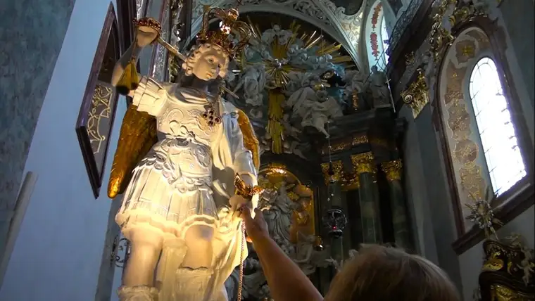

“Saint Michael the archangel, defend us in battle…”

There’s something about a large male angel with wings carrying a sword—and stomping on the devil’s head—that captures our attention. As the world becomes more fragile, the image grows more alluring, and the power and protection the archangel yields, more urgent.
Though instinctively drawn to this Biblical figure known for battling Satan, in recent years, I’ve sensed a need to play catchup with his history. “Saint Michael: Meet the Angel” filled in some gaps regarding this valiant defender of good.
Billed as “an inspiring documentary about the role of Saint Michael and other holy angels,” the film introduces religious experts on the topic from around the world. “What thoughts will appear today in the heart of the witness visiting places by a pure spirit, the angel of God?” the narrator provokes.
The viewer then takes part in a cinematic journey to places where Saint Michael has left his mark. Glimpsing these sacred sites of grandeur, one senses a transcendent peering into a previously unseen world.
Saint Michael, we are reminded, fought Lucifer, the first angel to rebel against God. According to Arch. Henryk Hoser, Lucifer created hell through his rebellion, preceding man’s own rebellion in paradise. In response, and in contrast, Saint Michael “stands at the head of the heavenly army.”
Featured in Old and New testaments
Saint Michael does not only belong to Christians, but Jews as well, having been mentioned five times in Scripture, including in the Old Testament, and in apocryphal books—always as an opponent to darkness. His very name gives us clues of his mission, Hoser says, noting its meaning: “Who is like God?”, with his motto in fighting evil continuous. “God is greater,” he answers, comparable to none.
We’re also reminded how, in Scripture, Saint Michael appears as bookends in the story of salvation, leading all people, according to writer Zenon Ziolkowski, through tumult until the eve of the return of Jesus Christ.
Veneration of Saint Michael began in the Eastern church, and later, migrated to the western half as the people themselves moved. But his earthly history originates at a grotto in Gargano, Italy, at the Heavenly Basilica at Mount Sant’ Angelo.

The Rev. Wladyslaw Duchy, rector of the seminary there, said when Bishop Lawrence and inhabitants of Siponto, Italy, arrived at the mountains intending to bless the grotto, Saint Michael reportedly announced he’d already consecrated it. Upon entering the cave, the bishop noted a rock in the form of an altar on which a child’s footprint was left. “It was a visible sign,” Duchy said, “…that Saint Michael had taken possession of this place.”
Subsequently, many other miracles have happened there; most often of conversion after visitors experience God’s transforming power “under the wings of Saint Michael.”
Notably, the Capuchin friar Padre Pio had been “fighting Satan,” and was roaming about Italy, unsettled, until 1918, when the archangel drew him to the area, according to Ziolkowski. It was while praying before a cross in front of a likeness of Saint Michael painted on the vault above the main door of the sanctuary that he received the stigmata.
“We have Saint Michael there, and invisible rays pass through the cross,” at the same time the stigmata appears on Padre Pio’s hands, legs, chest, and shoulder, “as if caused by carrying the cross.” For 50 years, daily, a cup of blood emerged from those wounds.
The archangel also reportedly told the bishop that “wherever the rock opens, human sins will be forgiven,” connecting Saint Michael with Confession and mercy. “I would say this is the first sanctuary of Divine Mercy,” Duchy said. “We know Satan cannot be destroyed, but it is possible to restore the kingdom of Christ (interiorly), and defeat Satan in one’s human heart.”
A mother’s account
The film also shares the story of a 34-year-old mother of six name Michela from Italy. In childhood, she was affected by her family’s practice of “magic,” events of a Satanic nature, which involved spells that left her feeling she was not lovable.
Convinced she should visit Mount Sant’ Angelo, she traveled there with her husband and priest, and, upon entering the sanctuary, felt a strong urge to kneel. As she did, Saint Michael made the spirit that had been tormenting her kneel down as well. “I was forced to obey until I was liberated from it,” she said.

The archangel was teaching her humility to God, she said, and slowly, she began to change, understanding herself as a being whom the Lord has loved through sacrificing his blood.
Fittingly, as the film notes, Pope Pius XII called Saint Michael “The guardian angel of the family.”
‘Breath of the Holy Spirit’
Rev. Marcella Stanzione, author of over 200 books on angels, and proponent of reinstating the prayer to Saint Michael at the end of every Mass, said the choice the archangel made to defend God comes before us each day.
Borrowing words from Saint Thomas Aquinas, he said Saint Michael is “the breath of the Holy Spirit that will defeat the Antichrist and all evil spirits,” and wherever danger or conflict ensues, the archangel intervenes.

He is also the angel of water, healing, and in overcoming epidemics, Stanzione noted, and, with Saint Joseph, assists the dying. “Each of us will face a fierce struggle at the time of death,” with the devil tempting us with reminders of our sin.
“When a man walks the path of holiness,” he reminded, “he cannot avoid meeting Saint Michael.”
Other tour highlights included a famous painting of Saint Michael in Rome by Guido Reni, inspired by St. Francis, and the sanctuary of Mount St. Michele in France, where, according to the chaplain there, the Rev. Henri Gesmier, visitors’ gazes are drawn upward, assuring us there is something more than suffering. “There is hope in God.”
Poland and Spain mark other stopping places, and at the end of the film, an extra segment helps viewers learn more about other angels in the heavenly realm.
I watched this film at home with some of my family, and while the participants said they appreciated the film, some felt the tour seemed abrupt at times, with lots of information to absorb with little processing time. We all agreed it would be a good educational tool for schools and parents who want to teach their children more about the spiritual realm.
As a fun aside, organizers of the film’s launch created an innovative photo filter featuring the Saint Michael movie, searchable on Instagram or Facebook through “Saint Michael Movie,” encouraging participants to take a selfie or record a short message, then post and tag the film with #SaintMichaelMovie—perhaps a fun exercise for teens especially.
Q4U: What is your personal history with Saint Michael the Archangel?